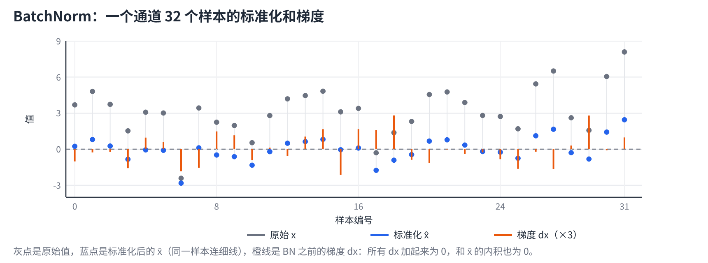
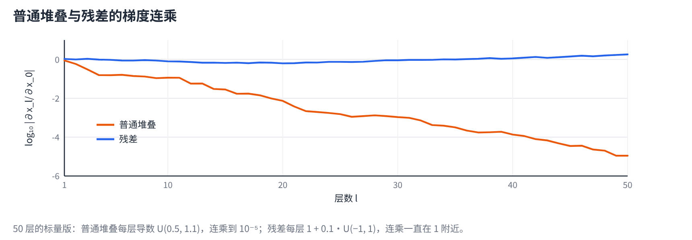
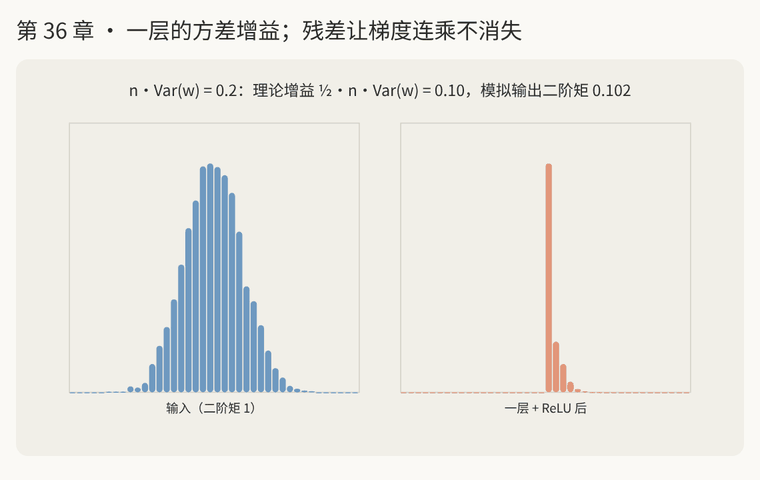

第 36 章 · CNN 训练的数学：卷积的反向传播、转置卷积、Xavier / He 初始化、BatchNorm 的梯度、残差的梯度流
本地运行
git clone https://github.com/wikieden/math-and-eval-stats
cd math-and-eval-stats/code/notebooks
pip install jupyterlab torch numpy
jupyter lab ch36_cnn_training.ipynb也可以下载后直接用 VS Code 打开 .ipynb 运行。需要 GPU 的章节在 Colab 里选「代码执行程序 → 更改运行时类型 → GPU」。
本章回答：卷积层的梯度怎么算，为什么"反向是转置"？转置卷积（反卷积）的输出尺寸怎么算？He 初始化的 2/n 是怎么推出来的？BatchNorm 的梯度有什么特殊结构？残差连接为什么能让 100 层的网络训得动？
讲解日期：2026-11-25 · 上一章：第 35 章 卷积的数学 · 下一章：第 37 章 注意力的数学
对应原文：Dumoulin & Visinmath-and-eval-stats/materials/text/papers/conv-arithmetic-1603.07285.txt第 4 章转置卷积（Relationship 8–14，L846–L1003）；He 2015math-and-eval-stats/materials/text/papers/he-init-prelu-1502.01852.txt§2.2（式 (9) 方差连乘、式 (10) ½n_l Var[w_l] = 1，L225–L239）；BatchNormmath-and-eval-stats/materials/text/papers/batchnorm-1502.03167.txt（算法 1 L195、反向传播公式 L249 起）；ResNetmath-and-eval-stats/materials/text/papers/resnet-1512.03385.txt（F(x) + x，L95–L102）
本章缩写：BN = Batch Normalization（批归一化）；n_in、n_out = fan-in、fan-out（一个神经元的输入、输出连接数）；x̂ = 标准化后的值；γ、β = BN 的缩放和平移参数；VJP = Vector-Jacobian Product（向量-雅可比积）；ReLU = Rectified Linear Unit（整流 / 线性 / 单元）。全部缩写见 附录 · 缩写与术语表
讲解
第一步：卷积的反向传播 = 乘转置矩阵（2026-11-25）
类比：正向是每个输出向几个输入"收钱"，反向就是每个输入把收到的账单按同样的比例"退回去"。
第 35 章：y = Tx。对线性映射，\(\partial L/\partial x = T^\top\,\partial L/\partial y\)（第 13 章的 VJP）。Tᵀ 也是 Toeplitz，作用在梯度上等于"把上游梯度和核做 full 模式的真正卷积"（核翻转，第 35 章第二步说的那一处）：
例子（x、核同第 35 章，上游梯度 g = [1, 2, 0, −1]）：
| 算法 | ∂L/∂x |
|---|---|
| Tᵀg | [1, 2, −1, −3, 0, 1] |
| np.convolve(g, k, "full") | [1, 2, −1, −3, 0, 1] |
对核的梯度：\(\partial L/\partial k_j = \sum_ig_ix_{i+j}\)，是输入和上游梯度的互相关。所以一个卷积层的反向传播里有两个"卷积"：对输入（full 卷积）、对权重（互相关）。
一句话：卷积是线性的，反向就是乘 Tᵀ：对输入是梯度和核的 full 卷积，对核是输入和梯度的互相关。
第二步：转置卷积：把"反向"拿来做"上采样"（2026-11-25）
转置卷积就是把第一步那个 Tᵀ 当成一层前向运算用：从小图得到大图（分割、生成网络的解码器）。它不是卷积的逆（T 不可逆），只是形状上"反过来"。
尺寸公式（Dumoulin & Visin 第 4 章，PyTorch ConvTranspose 文档同式）：
例子：
| 输入 | k | s | p | output_padding | 输出 |
|---|---|---|---|---|---|
| 16 | 4 | 2 | 1 | 0 | 32（DCGAN、U-Net 常用的"放大一倍"） |
| 7 | 3 | 2 | 1 | 0 | 13 |
| 7 | 3 | 2 | 1 | 1 | 14 |
步长 2 的卷积把 13 和 14 都变成 7，所以转置回去有歧义，output_padding 用来选。步长不整除核大小时（k = 3、s = 2），输出上会有些位置被叠加的次数多、有些少，产生棋盘格伪影；k = 4、s = 2 或"先插值再普通卷积"可以避免。
一句话：转置卷积 = 拿 Tᵀ 做前向的上采样，不是卷积的逆；尺寸 (n − 1)s − 2p + d(k − 1) + op + 1。
第三步：Xavier / He 初始化：让每层的信号大小不变（2026-11-25）
类比：接力传话，每个人说话的音量要和听到的一样大，不然传十个人以后不是听不见就是震耳欲聋。
一层 \(y = \sum_{i=1}^{n_{in}}w_ix_i\)，w、x 独立、w 均值 0：
ReLU 把一半砍掉，二阶矩减半（He 式 (9)，L225）。L 层连乘 \(\prod\frac12n_l\text{Var}(w_l)\)，要它不指数爆炸或消失，就让每一项 = 1（式 (10)，L239）：
例子（n_in = n_out = 512，输入二阶矩 1，过一层 ReLU）：
| 初始化 | 理论增益 ½·n·Var(w) | 模拟一层 |
|---|---|---|
| N(0, 0.01²) | 0.0256 | 0.0256 |
| Xavier | 0.5000 | 0.5005 |
| He | 1.0000 | 1.0011 |
每层乘一次这个增益，多层就是它的幂。
场景代码：PyTorch 里显式指定（真实库调用；本书环境没装 torch，没跑过）：
nn.init.kaiming_normal_(conv.weight, mode="fan_in", nonlinearity="relu") # Var = 2 / fan_in
nn.init.xavier_uniform_(linear.weight) # Var = 2 / (fan_in + fan_out)
# 卷积的 fan_in = C_in × k × k
一句话：一层的信号增益是 ½·n_in·Var(w)（ReLU），He 取 Var = 2/n_in 让它等于 1；Xavier 是为对称激活推的。
第四步：BatchNorm 的梯度：自动去掉"均值方向"和"x̂ 方向"（2026-11-25）
BN 对每个通道、在一个 batch 上做 \(\hat x = (x - \mu_B)/\sigma_B\)，再 γx̂ + β（BatchNorm 算法 1，L195）。因为 μ、σ 本身依赖 x，梯度不是简单的 g/σ（反向公式 L249 起）：
例子（32 个样本 × 4 个通道，随机上游梯度）：每个通道 Σ dx = 0，Σ dx·x̂ = 0（数值上都是 10⁻¹⁰ 以下）。
含义：BN 之前的层，梯度里"让整批一起变大 / 平移"的分量被消掉了，因为 BN 反正会把它归一化掉。这让训练对前面层的尺度不敏感、可以用更大的学习率。代价：训练和推理行为不同（推理用滑动平均的 μ、σ），batch 太小时统计不准。

图 36-1 · 一个通道 32 个样本：灰点是原始值（均值约 3、标准差约 2），蓝点是 BN 后的 x̂（均值 0、标准差 1）；橙线是 BN 之前的梯度 dx（放大 3 倍画），它们加起来为 0，和 x̂ 的内积也为 0一句话：BN 的梯度 = (g − 均值 − x̂·⟨g, x̂⟩)/σ，自动和"全 1"、"x̂"两个方向正交。
第五步：残差：梯度连乘里多了一个 1（2026-11-25）
类比：楼梯每一级都有一部直达电梯。 走楼梯可能越走越累（梯度越乘越小），电梯保证至少有一条路是通的。
普通堆叠 \(x_{l+1} = f(x_l)\)：\(\partial x_L/\partial x_0 = \prod f'\)。残差 \(x_{l+1} = x_l + F(x_l)\)（ResNet L95–L102）：
例子（50 层，标量版）：
| 结构 | 每层导数 | 连乘 |
|---|---|---|
| 普通堆叠 | U(0.5, 1.1) | 1.11 × 10⁻⁵ |
| 残差 | 1 + 0.1·U(−1, 1) | 1.8153 |
普通堆叠的连乘按指数消失；残差的每一项都在 1 附近，连乘保持在 1 的量级。ResNet 的原始动机是"学 F(x) = 0 比学恒等映射容易"，梯度流是同一件事的另一面。

图 36-2 · 横轴层数，纵轴 |∂x_l/∂x_0|（对数）；普通堆叠一路下降到 10⁻⁵，残差在 1 附近波动一句话：残差把每层的雅可比从 F′ 变成 I + F′，连乘不会指数消失，深网络才训得动。
动画演示：方差逐层传播与残差捷径

可交互版：animations/36-cnn-training.html（下拉切换"一层的方差增益 / 梯度连乘"；滑块调初始化方差或层数）。
怎么看：
- 一层的方差增益：左边是输入的直方图，右边是过一层 ReLU 后的直方图，滑块调 n·Var(w)，右上角是增益 ½n·Var(w)（第三步）；
- 梯度连乘：两条折线是普通堆叠和残差的 |∂x_l/∂x_0|，层数从 1 拖到 50（第五步）。
练习与作答记录
题 1（第一步）：信号 x = [1, 2, 3, 4]，核 [2, −1]（valid 互相关），上游梯度 g = [1, 0, 1]。算 ∂L/∂x 和 ∂L/∂k。
作答：（待作答）
题 2（第三步）：卷积层 C_in = 64、3×3 核，用 He 初始化，权重的标准差是多少？如果激活函数是 tanh（在 0 附近近似恒等）而不是 ReLU，该用多少？
作答：（待作答）
题 3（第五步）：每层残差分支的导数恰好是 −0.5（每层 1 − 0.5），20 层的连乘是多少？这说明残差连接在什么情况下也救不了梯度？
作答：（待作答）
口诀
卷积反向乘转置：对输入 full 卷积，对核互相关；
转置卷积拿来上采样，不是逆，注意棋盘格；
一层增益半个 n 乘方差，He 取二除 n；
BN 梯度去掉均值和 x̂ 两个方向；
残差每层多个 1，连乘不消失。
本章复习卡片
ST121（卷积的反向传播与转置卷积尺寸）、ST122（He / Xavier 初始化的方差推导）、ST123（BatchNorm 的梯度结构；残差的梯度流）。练习做完后，按答错、卡住的地方补上。
附录 · 延伸阅读
留给以后深入学习用，不影响本章主线。★ 是建议先读的。
推荐阅读
| 读什么 | 读哪里 | 读它为了什么 |
|---|---|---|
| ★ He 2015 | §2.2（式 (9)(10)，L225–L239） | 初始化方差的推导，含反向传播的版本 |
| ★ BatchNorm（Ioffe 2015） | §3（算法 1、反向公式） | BN 的定义与梯度 |
| ★ ResNet（He 2016） | §3.1–3.2 | 残差学习的动机 |
| Dumoulin & Visin | 第 4 章（转置卷积） | 转置卷积的尺寸与图解 |
| 《PyTorch 从里到外》第 4 章 autograd | 全章 | VJP 在框架里怎么组合 |
数学原理
- 线性层的反向：y = Tx ⇒ ∂L/∂x = Tᵀ∂L/∂y；Toeplitz 的转置还是 Toeplitz，对应翻转核的 full 卷积。
- 独立乘积的二阶矩：w、x 独立且 E[w] = 0 时 E[(wx)²] = Var(w)E[x²]；n 项独立求和方差相加。
- ReLU 减半：y 对称分布时 E[ReLU(y)²] = ½E[y²]。
- BN 梯度的投影形式：dx = (1/σ)(I − (1/m)(𝟙𝟙ᵀ + x̂x̂ᵀ))g，括号里是投影到 {𝟙, x̂} 正交补的矩阵。
- 残差雅可比：∂x_{l+1}/∂x_l = I + J_F；‖∏(I + J_l)‖ 在 J_l 小时接近 1。
公式清单
| 公式 | 意思 |
|---|---|
| \(\partial L/\partial x = T^\top g\) | 卷积的反向 |
| \(o = (n - 1)s - 2p + d(k - 1) + op + 1\) | 转置卷积尺寸 |
| \(\text{Var}(w) = 2/n_{in}\) | He 初始化 |
| \(\text{Var}(w) = 2/(n_{in} + n_{out})\) | Xavier 初始化 |
| \(dx = (g - \bar g - \hat x\,\overline{g\hat x})/\sigma\) | BN 的梯度 |
| \(\partial x_L/\partial x_0 = \prod(1 + F'_l)\) | 残差的梯度连乘 |
代码对照：把本章的数字用代码算一遍
代码在仓库本地
math-and-eval-stats/solutions/chapter-code/ch36_cnn_training.py，配套测试tests/test_ch36.py：
bash cd math-and-eval-stats/solutions/chapter-code uv run python ch36_cnn_training.py uv run pytest tests/test_ch36.py
讲义 ↔ 代码：
| 讲义 | 公式 | 写法 | 跑出来 |
|---|---|---|---|
| 第一步 反向 | Tᵀg | conv_backward(g) |
[1, 2, −1, −3, 0, 1] |
| 第二步 转置卷积 | 尺寸公式 | tconv_size(16, 4, 2, 1) |
32 |
| 第三步 初始化 | ½n·Var | layer_gain、one_layer_check |
1.0000、1.0011 |
| 第四步 BN 梯度 | 投影 | batchnorm_grad(x, g) |
Σ = 0 |
| 第五步 残差 | 连乘 | grad_products() |
1.11e-5 vs 1.8153 |
关键几行：
return np.convolve(g, k, "full") # 反向：梯度和核的 full 卷积
return (g - g.mean(0) - xh * (g * xh).mean(0)) / np.sqrt(var + eps) # BN 对输入的梯度
a = np.maximum(x @ w, 0) # 一层 + ReLU，看二阶矩
代码里才看得到的 3 件事：
- 核梯度没单独写函数：∂L/∂k_j = Σ g_i x_{i+j}，就是
np.correlate(x, g, "valid")，留给题 1 自己验证。 - BN 检查时 eps = 0：带 eps 时 x̂ 的分母和
x.std()差一点，Σ dx·x̂ 就不是精确的 0。 - 一层模拟用 4000 × 512 的随机输入：二阶矩的估计误差约 1/√(4000·512)，所以和理论值差在千分位。
自己改一改（不影响练习答案）：
- 把
one_layer_check的激活换成 tanh，Xavier 的增益变成多少？ - 给 BN 加上 γ = 2、β = 1，梯度的两个正交性质还成立吗？